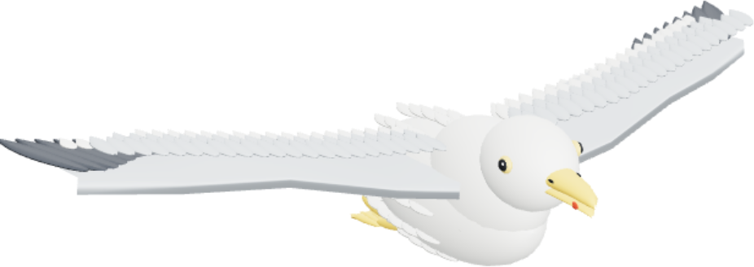
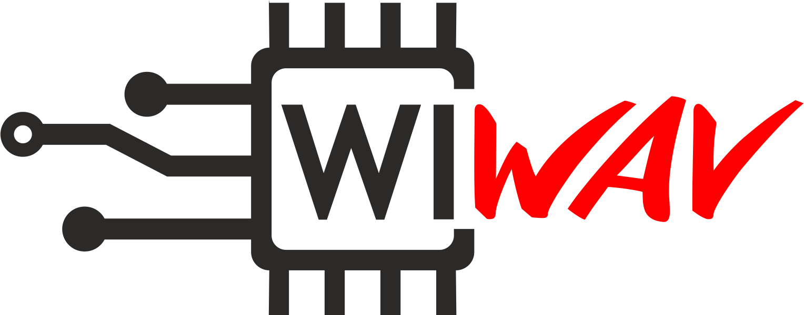
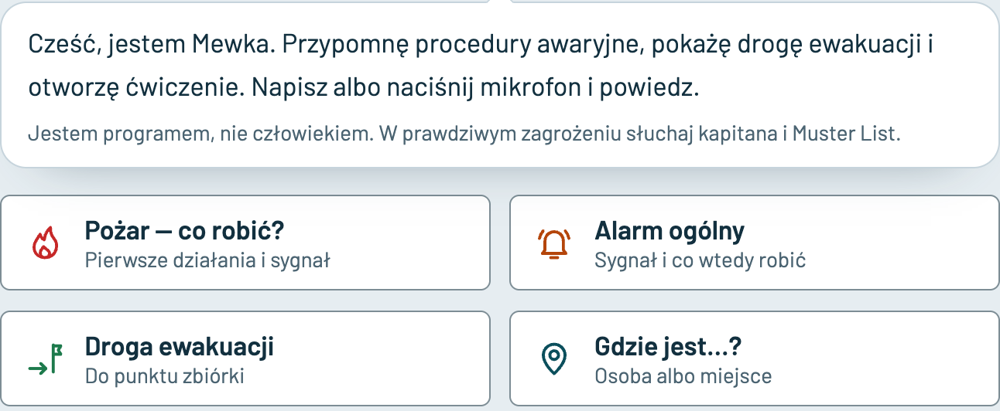
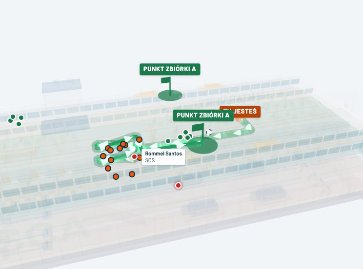

Na promie pracuje kilkadziesiąt osób rozsianych po siedmiu pokładach. W alarmie oficer na mostku musi szybko wiedzieć trzy rzeczy:
Kto jest jeszcze w maszynowni?
Czy wszyscy doszli do punktu zbiórki?
Którędy iść, gdy klatka schodowa jest odcięta?
Dziś to liczenie głów na kartce i krótkofalówka. Jantar Unity daje te odpowiedzi od razu, na każdym terminalu na pokładzie.
jantar.byst.re →
React i three.js na terminalach, Node.js w centrali, Claude jako mózg Mewki (z lokalnym trybem bez internetu), SQLite z bazą załogi, opaski i kotwice na ESP32 z BLE.
Prototyp hackathonowy. Nie zastępuje Muster List, instalacji alarmowej statku ani poleceń kapitana.
Cyfrowy asystent dla załogi i kapitana promu

Mewka: Na zbiórce 28 z 42 osób. Rommel Santos wysłał SOS ze schodów rufowych.

Asystentka głosowa na każdym terminalu. Pytasz głosem albo piszesz, ona odpowiada krótko, z procedur statku: co robić przy pożarze, jaki to sygnał, gdzie jest bosman, kogo brakuje na zbiórce.


Każda kropka to osoba z opaską. Mostek widzi, kto dotarł, kto idzie, a kogo trzeba szukać. Kliknięcie osoby pokazuje drogę do niej.
Z każdej strefy do punktu zbiórki, z czasem marszu i objazdem zablokowanej klatki.
Logowanie kartą lub opaską, role od kapitana do marynarza, rozmowy wideo między terminalami.
Scenariusze ćwiczeń z dziennikiem. Kropki ruchu statku na ekranie zmniejszają mdłości przy czytaniu.
Z ćwiczenia: pożar w kabinach rufowych